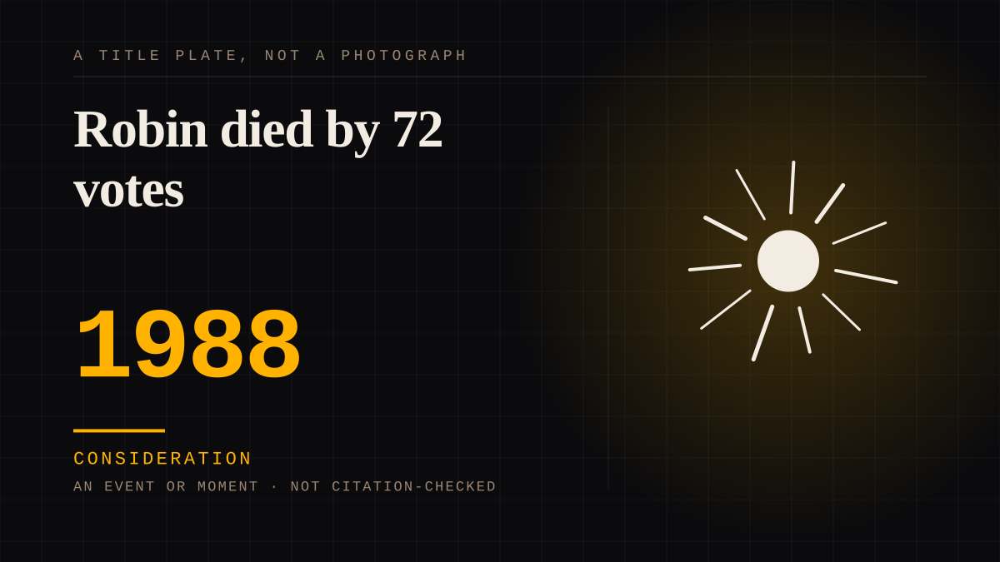

An event or moment · 1988 · Fandom
Robin died by 72 votes
In September 1988 Batman's readers called a premium-rate number, fifty cents a call, to decide whether the Joker's beaten Robin lived or died. The poll ran for about a day and a half and came down to 72 votes: 5,343 killed him, 5,271 spared him, and the issue that revealed the verdict had been prepared both ways.

**The audience's attachment to a fictional child was measured in change taken out of pockets, and it was a coin flip.** In September 1988 DC Comics asked its readers to settle the lives of the Joker's beaten sidekick by telephone. On the back cover of Batman #427 an advertisement showed Batman carrying the injured Robin and warned that readers could yet "prevent it with a telephone call"; two 900 numbers were printed, one for each verdict. The lines were open for about a day and a half from 9 a.m. Eastern on 15 September, and each call cost fifty cents. The numbers are the story. 10,614 calls were counted: 5,343 for the death, 5,271 against, a margin of 72. The result was kept secret, and the issue that carried the outcome was prepared two ways and finished in secrecy because the ending could not be known until the tally closed. The editor's own framing is in the records: the telephone poll was an extension of the policy of heeding what fans said in letters and at conventions, and the publisher did not want to waste the technology on whether Firestorm's boots should be red or yellow. "This had to be important stuff. Life-and-death." The sources disagree about the window, and the disagreement is kept: the publisher's own account says 36 hours, the reference account says 35, from 9 a.m. Eastern on 15 September. The closeness is the point. One account discloses that, with fifteen minutes left, survival was ahead by 38 votes before the final tally swung; a swing of a few dozen calls changed canon for decades. **A character's death was decided by whoever had a telephone and a dollar, and the margin is why the device keeps being retold.** Three years earlier a Broadway musical had shown an audience how a vote over a story feels - the relation this page points to - but that vote was free and stayed in the room. Here the vote left the room, priced itself, and could not be repeated once the lines closed. The pair is the same manufactured consequence, one in a theatre and one on a telephone line: both let the audience feel like co-authors of a fiction that never read any of the replies.
Consideration. The part where somebody stops and thinks. The research, the diagnosis, the ethics, the lawsuits, the regulators. Roughly fifty years of arguing with itself about whether this is a relationship.
Manipulation. One-sided attachment engineered for somebody else's benefit. Paid intimacy, parasocial persuasion, sasaeng, grief extraction, the streak. The lane that pays the bills and the lane that causes the most harm, frequently at the same time.
Where it sits
1950 1950-1999 · 1988 1999
Provenance · 3 source record(s)
- unverifiedThe vote as recorded: two 900 numbers (one per verdict), the lines open about 35 hours from 9 a.m. Eastern on September 15 1988, 10,614 votes with 5,343 for death and 5,271 against - a margin of 72 - the back-cover "prevent it with a telephone call" appeal, the dual-preparation of the revealing issue, and the unproven hearsay that a lawyer programmed a Macintosh to redial the killing number. Read through a search index rather than fetched, so the record is unverified: a reader can open this page, this agent did not.Wikipedia, "A Death in the Family (comics)" ↗
- unverifiedThe publisher's account: the poll as an extension of heeding fans' letters and convention talk, the editor's "This had to be important stuff. Life-and-death.", the 36-hour window, 10,614 calls and the 72-vote margin, and the claim that 72 more votes would have changed Batman history. Read through a search index rather than fetched, so the record is unverified: a reader can open this page, this agent did not.DC, "How 'A Death in the Family' Shook the World" (J. Lapin-Bertone, 12 October 2020) ↗
- unverifiedThe ad on the back of Batman #427 inviting the call appears here as a reproduction, along with the 36-hour window, the 72-vote margin, and the editor's disclosure revealed in the back of #429 that survival was ahead by 38 votes with fifteen minutes left. Read through a search index rather than fetched, so the record is unverified: a reader can open this page, this agent did not.How to Love Comics, "A Death in The Family: The Batman Comic That Killed Robin" (12 October 2020) ↗
Not yet stood behind. The entry is real. A person has not read the citation and confirmed it, so treat the date as approximate until they do.
Connected · 3 out, 1 in
It sits in
The full timeline → · The database → · See it in the atlas →